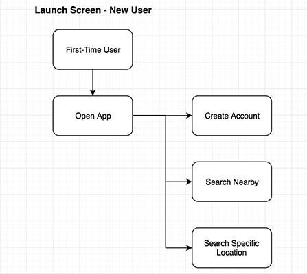
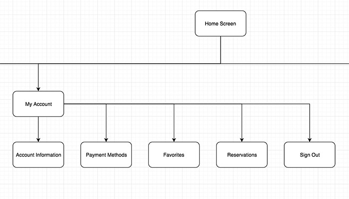
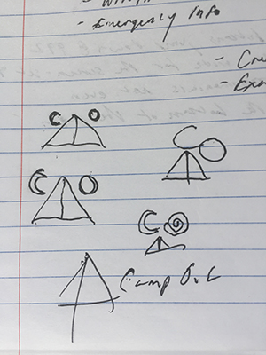
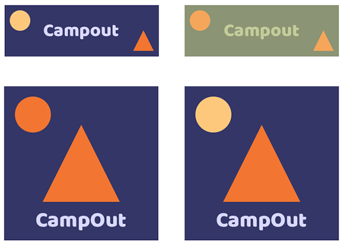
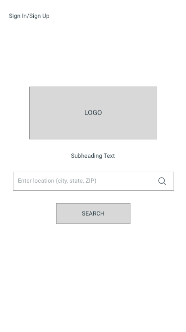
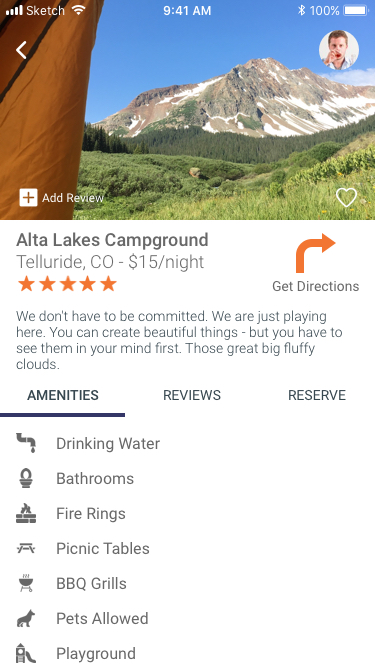
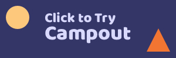

Camping is a great way to unplug from technology and connect with nature, but it can be surprisingly difficult to find a place to sleep under the stars.
CampOut was conceived trying to find affordable accomodations for a wedding. After much frustration searching for a camping spot, my friends and I finally caved and payed for a hotel. After a night of sub-par sleeping arrangements in an overpriced room, we started to discuss solutions to make tracking down the perfect camping spot more simple.
We all know there are thousands of amazing campsites out there, but your casual camper often doesn’t know how to find them. Our informal focus group identified several key issues in the way we plan a camping trip:
While my focus group had identified a number of problems, I decided to confirm our suspicions with a competitive analysis of several of the most popular camping apps. What I found was expected: outdated designs, limited functionality and little to no user interaction. Information was scattered, and several different apps were required to compare different types of campsites.
Having surveyed the playing field, functionality was the first place I decided to start. What were the key components a user would want? Based on my research I constructed a series of user stories that would allow me to establish a minimum viable product.
With the essential pieces of functionality identified, I worked to address one of the biggest problems: Camping apps can be confusing and difficult to use. To ensure a streamlined user experience, I developed user flows for each piece of functionality using Draw.io.
The pieces were now in place, but they needed to fit together. Before any design work could begin a sitemap was required. This takes all of the potential user flows and fits them together into one cohesive application.
Now the fun can begin! What does the CampOut brand look like? To create a brand identity that can drive the overall feel of the app I started sketching out logos and searching for color palettes.
Enlisting the help of my focus group, the final options were selected based on popular opinion. According to one of the participants, “The simplicity of this logo reminds me of the experience I want to get from camping.” While it would’ve been understandable to go with a forest green theme, focus group participants preferred the purple and orange, noting it reminded them of the early morning and evening skies they’ve experienced on their camping adventures.
With a brand established, it’s time to start building some wireframes for the basic look and feel of the app. These lo-res wireframes were created in Sketch.
Having all of the essential screens accounted for, it’s time to bring them to life. In the design process I focused on solving the problem of camping apps and websites being confusing and outdated. My aim was to make a layout that had a very familiar and intuitive feel to other apps that allow you to search, rate and review.
The app makes sense to me, but what about potential users? To find out I created a clickable prototype using InVision. Sending it out to friends and family I gathered feedback and made adjustments accordingly.
Luckily living in Colorado provides opportunities to connect with all levels of campers. I was able to get feedback on the prototype from roughly 20 people who ranged from backpackers to glampers.
One of the most common pieces of positive feedback was about simplicity. Testers felt this made it intuitive and easy to use because there wasn’t anything to distract from what you were trying to accomplish.
While the intuitive design was praised, it did cause a bit of confusion. Originally the favorites feature was designed to work like Twitter: Tap an icon to favorite, tap again to remove the favorite. Several users were unclear how to edit their favorites, so I did a quick preference test on UsabilityHub. The results showed users overwhelmingly preferred the version with the save button.
There were a lot of lessons learned designing the CampOut app, from the standards of iOS design to the value of user testing. When I finish a project I like to look at these key areas:
App design is a lot of fun. I really like thinking about solutions that are convenient and accessible for users. This project incorporated elements such as a checkout process, review process and account creation. All of these are common elements that can be used for a wide variety of different applications.
Brandon Farestad-Rittel
bfarestadrittel@gmail.com
Denver, CO